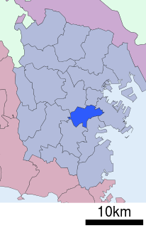
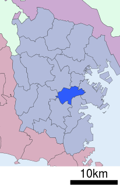

私のおすすめのエリア
=横浜市南区の紹介=
横浜市南区とは、横浜市にある十八区の中で二番目に面積が小さく、一番人口密度が高いと言われる地区です。
横浜駅のある西区・横浜の有名な歴史ある建物が立ち並ぶ中区に面している地区です。 元々は中区に属しており、中区の中では「南」の方の地域にあったことから「南区」となりました。
横浜駅のある西区・横浜の有名な歴史ある建物が立ち並ぶ中区に面している地区です。 元々は中区に属しており、中区の中では「南」の方の地域にあったことから「南区」となりました。
＜地図＞


＜南区内の路線・駅名＞
京浜急行：黄金町駅・南太田駅・井土ヶ谷駅・弘明寺駅
横浜市営地下鉄：（阪東橋駅）・吉野町駅・蒔田駅・弘明寺駅
京浜急行：黄金町駅・南太田駅・井土ヶ谷駅・弘明寺駅
横浜市営地下鉄：（阪東橋駅）・吉野町駅・蒔田駅・弘明寺駅
=南区のおすすめポイント=
①平らな場所が多い
南区には「鎌倉街道」という、鎌倉まで続く平らで大きな道が通っています。山が多いため坂道がたくさんある横浜市の中では、比較的平地が多い地域です。
南区には「鎌倉街道」という、鎌倉まで続く平らで大きな道が通っています。山が多いため坂道がたくさんある横浜市の中では、比較的平地が多い地域です。
②下町を感じる地域
南区には二つの商店街があります。
・弘明寺観音の門前町から栄え商店街にまでなった、弘明寺商店街
・横浜市内でも活気のある商店街で有名な、横浜橋通商店街
どちらも下町感あふれる、昔からある商店街です。
また、商店街は何といっても物価が安いので、近くにあるだけで独り暮らしの学生さんにはかなり助かる存在です。
南区には二つの商店街があります。
・弘明寺観音の門前町から栄え商店街にまでなった、弘明寺商店街
・横浜市内でも活気のある商店街で有名な、横浜橋通商店街
どちらも下町感あふれる、昔からある商店街です。
また、商店街は何といっても物価が安いので、近くにあるだけで独り暮らしの学生さんにはかなり助かる存在です。
③南区最大の観光名所、大岡川プロムナード
南区には大岡川という川が流れており、川沿いには多くの桜が咲いており、その数なんと５００本にも上ります。(中区の地域も含めると全部で７００本です。)
毎年春には「桜まつり」が開かれており、花見場所としては全国８位、神奈川県内では１位を誇る人気だそうです。 参考サイト
南区には大岡川という川が流れており、川沿いには多くの桜が咲いており、その数なんと５００本にも上ります。(中区の地域も含めると全部で７００本です。)
毎年春には「桜まつり」が開かれており、花見場所としては全国８位、神奈川県内では１位を誇る人気だそうです。 参考サイト
おすすめに至るまでの過程第7回【物件データ分析】